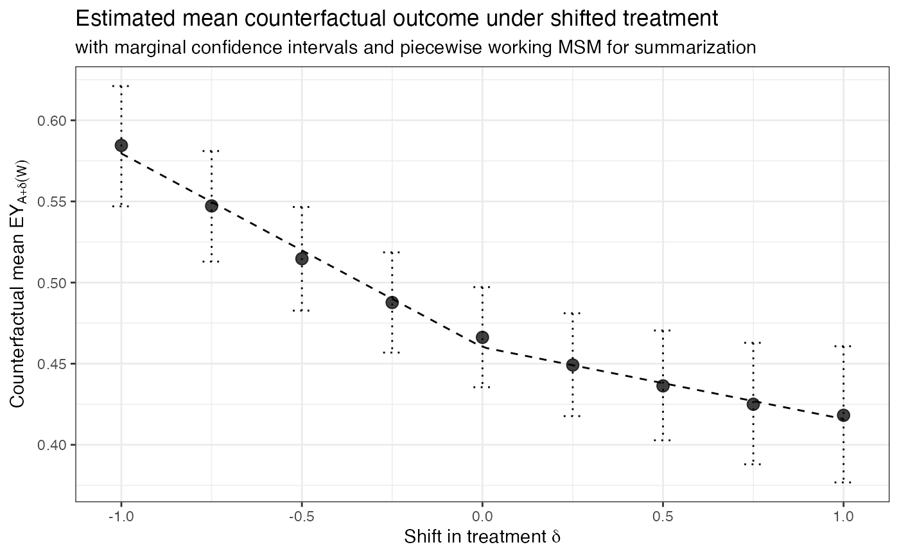

Plot working MSM for causal effects of an intervention grid
# S3 method for txshift_msm plot(x, ...)
| x | Object of class |
|---|---|
| ... | Additional arguments passed to |
Creates a visualization of the intervention-specific counterfactual means as well as the working marginal structural model summarizing the trend across posited values of the intervention.
if (require("sl3")) { set.seed(3287) n_obs <- 1000 W <- as.numeric(replicate(1, rbinom(n_obs, 1, 0.5))) A <- as.numeric(rnorm(n_obs, mean = 2 * W, sd = 1)) Y <- rbinom(n_obs, 1, plogis(2 * A - W)) msm <- msm_vimshift( W = W, A = A, Y = Y, estimator = "tmle", g_fit_args = list( fit_type = "sl", sl_learners_density = Lrnr_density_hse$new(Lrnr_glm$new()) ), Q_fit_args = list( fit_type = "glm", glm_formula = "Y ~ ." ), delta_grid = seq(-1, 1, 0.25) ) plot(msm) # fit a linear spline with knot at 0 set.seed(8293) n_obs <- 1000 W <- as.numeric(replicate(1, rbinom(n_obs, 1, 0.5))) A <- as.numeric(rnorm(n_obs, mean = 2 * W, sd = 1)) Y <- rbinom(n_obs, 1, plogis(0.1 * A * (A >= 0) - 3 * A * (A < 0) - W)) msm <- msm_vimshift( W = W, A = A, Y = Y, estimator = "tmle", g_fit_args = list( fit_type = "sl", sl_learners_density = Lrnr_density_hse$new(Lrnr_glm$new()) ), Q_fit_args = list( fit_type = "glm", glm_formula = "Y ~ ." ), delta_grid = seq(-1, 1, 0.25), msm_form = list(type = "piecewise", knot = 0) ) plot(msm) }